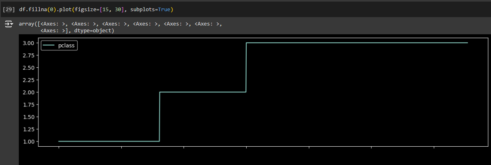

Libraries
During the classes we've imported three essential libraries: pandas, numpy, and matplotlib.pyplot, robust tools for data handling, numerical computation, and visualization
During the classes we've imported three essential libraries: pandas, numpy, and matplotlib.pyplot, robust tools for data handling, numerical computation, and visualization
By integrating these libraries and data science techniques, we were able to perform a comprehensive analysis of the Titanic dataset. This approach not only allowed us to compute basic statistics but also enabled us to visualize and interpret the data in a meaningful way.
In order to better visualize information we utilized matlab functions to plot informations. Here we can see a graph that displays the class distribution of the titanic's passengers
